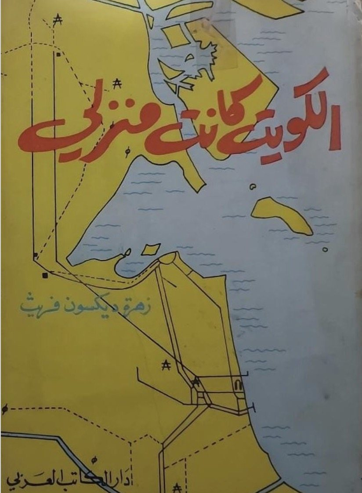
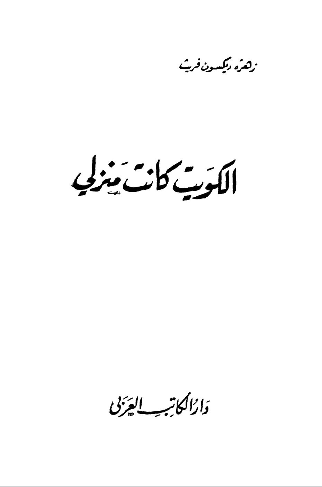

Arabic translation of Kuwait Was My Home (1956) · Book pages, Zahra Dickson Freeth, Al-Kuwait Kanat Manzili (Kuwait Was My Home), Dar Al-Kateb Al-Arabi
Zahra Freeth visits the house of Abdulwahab Al-Qatami, the shipowner, and his son Yousef
What it is
Among the visitors who came to greet Zahra Freeth on her return to Kuwait was Al-Sayyid Abdulwahab Al-Qatami, a wealthy man who owned some of Kuwait’s ships, which often sailed to southern Arabia and East Africa. He told her his wife was about to leave for Hajj in Mecca, and she promised to visit with medicines for the journey. Passing the shipyard on the shore where Abdulwahab and his sons built and stored their ships, she saw six sailors repairing Al-Qatami’s ships for a voyage, and was told Hajji Abdulwahab himself meant to sail to the Indian Ocean while his wife was in the holy places. At the two storey house one of Al-Qatami’s sons, Yousef, led them to the women’s quarters; Yousef wrote out the Arabic instructions for each medicine, and she was struck that a wife living in such comfort chose to make the thousand mile journey by camel.
Why it matters
An eyewitness picture of Abdulwahab bin Abdulaziz Al-Qatami’s household, shipyard and ships, by the daughter of the British Political Agent H. R. P. Dickson.
Page copies


Notes
Only the first pages are shown here. Family members who sign in can see all 4 pages.
Sources
Zahra Dickson Freeth, Al-Kuwait Kanat Manzili, Dar Al-Kateb Al-Arabi, pages 71 and 72
How this text was made: The year of the visit and of the Arabic edition are not on the pages sent. The identification with Abdulwahab bin Abdulaziz rests on his ships, his son Yousef and the shipyard.
Open in the interactive site